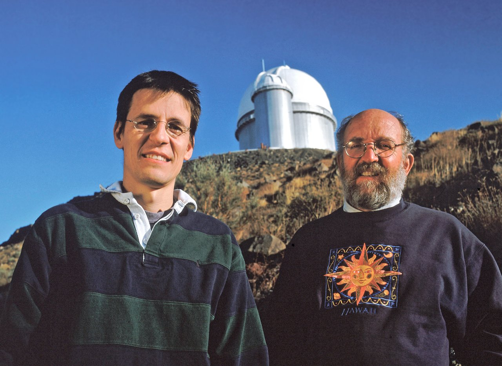
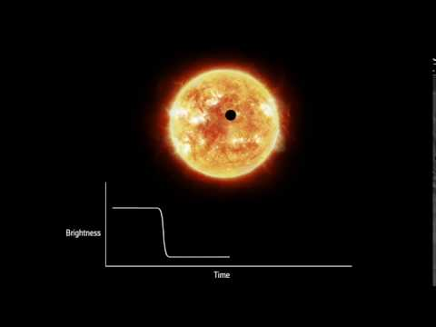
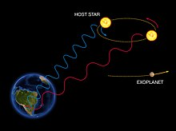
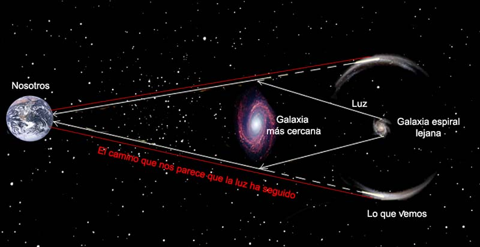

Más allá de nuestro sistema solar, en las profundidades del espacio, se ocultan los exoplanetas, mundos enigmáticos que orbitan estrellas lejanas. ¿Hay otros hogares cósmicos esperando ser descubiertos? La búsqueda de vida extraterrestre continúa...
¿Qué son?
Los exoplanetas son planetas que orbitan estrellas distintas a nuestro Sol. Son mundos distantes fuera de nuestro sistema solar que pueden tener una amplia gama de características y propiedades, y representan una ventana hacia la diversidad y posibilidad de otros mundos en el universo.

Historia del descubrimiento
El hito histórico del descubrimiento del primer exoplaneta confirmado ocurrió en 1995 en el Observatorio de Haute-Provence, Francia. Los astrónomos suizos Michel Mayor y Didier Queloz utilizaron el método de la velocidad radial para detectar a 51 Pegasi b, un gigante gaseoso que orbita alrededor de la estrella 51 Pegasi. Este descubrimiento revolucionario abrió las puertas a la búsqueda y el estudio de exoplanetas en todo el universo.
Desde entonces, numerosos investigadores y científicos de todo el mundo han contribuido a este campo en rápido crecimiento, utilizando diversas técnicas de detección y colaborando en proyectos internacionales como el Telescopio Espacial Kepler y el Satélite de Sondeo de Exoplanetas en Tránsito (TESS).
Métodos de detección
Tránsito
Se observa la disminución periódica en el brillo de una estrella cuando un exoplaneta pasa frente a ella, bloqueando parcialmente su luz. Esta disminución en el brillo puede medirse y utilizarse para inferir la presencia y características del exoplaneta.

Velocidad radial
Se monitorea el "bamboleo" de una estrella causado por la atracción gravitacional del exoplaneta en órbita. Este efecto induce cambios en la luz emitida por la estrella, lo que permite determinar la presencia y propiedades del exoplaneta.

Microlente gravitacional
Se aprovecha el fenómeno de la curvatura de la luz causada por la gravedad de una estrella en primer plano. Si un exoplaneta pasa cerca de esta estrella, su gravedad actúa como una lente que amplifica y distorsiona la luz de una estrella distante. Este efecto fugaz puede ser detectado y utilizado para identificar la presencia de un exoplaneta.

Imágenes directas
Se capturan imágenes directas de los exoplanetas y se detecta su luz separada de la estrella anfitriona. Este método es desafiante debido a la diferencia de brillo entre la estrella y el exoplaneta, pero ha permitido la observación directa de algunos exoplanetas gigantes y distantes.